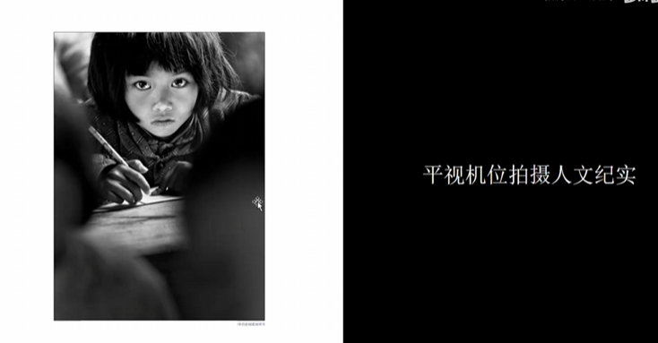
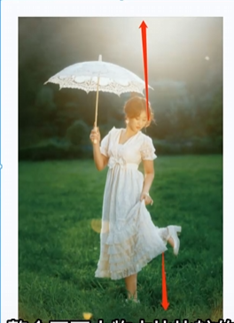

教程及截图来自b站： https://www.bilibili.com/video/BV1DQiyYkEJC/
什么是机位
简而言之相机的位置。相机与模特的三维位置
三维
高度
- 平视机位
- 取决于取景框上的中心对焦点，应与中心对焦点持平
- 优势：
- 相比高低机位，更具真实感 适合严谨的情境 如证件照、人文纪实。
- 更容易产生情感共鸣，利于情绪传达，如上图就是个很好的例子。突出人物情绪的关键：利用近景或特写

- 小技巧： #拍摄技巧
- 上面的照片也没有完全持平哦，可以把相机稍微拉高或拉低，更能表现情绪状态
- 那么高到什么地方，低到什么地方呢？上下15度范围，避免成为高低机位的视觉观感
- 劣势：
- 效果不惊艳：不要拍远、全、中景
- 进一步拔高：
- 强化：搞清楚想要表达的主题，使用技巧强化它
- 规避：可以把不好看的人物五官利用机位的变化规避掉 口诀：近大远小
- 高机位
- 低机位
角度
- 正面
- 侧面
- 背面
距离
取景范围（景别）
- 远
- 即远景拍摄
- 全
- 主体完整呈现于画面， 人物占比大
- 
- 中
- 取景范围为人物的膝盖以上或胸部以下
- 近
- 取景范围为人物的胸部以上或肩部以下
- 特
- 特写